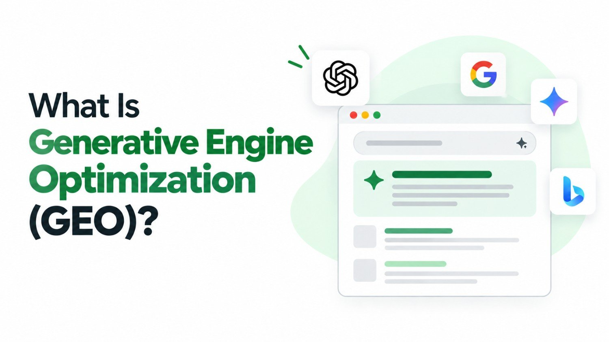

Search is no longer just about ten blue links. In 2026, when someone types a question into Google, they are just as likely to receive a fully composed AI-generated answer at the top of the page as they are to see a list of websites. Tools like ChatGPT, Google's AI Overviews, and Perplexity are changing where and how people find information - and that changes everything for businesses trying to stay visible online.
This shift has given rise to a new discipline: Generative Engine Optimization, or GEO. If you want your business to be discovered in the era of AI-powered search, understanding GEO is no longer optional.
What Is Generative Engine Optimization?
Generative Engine Optimization (GEO) is the practice of optimizing your content so that it gets cited, referenced, or summarized by AI-powered answer engines - such as Google's AI Overviews, ChatGPT, Perplexity, and Microsoft Copilot. Unlike traditional SEO, where the goal is to rank on a results page, GEO focuses on making your content the source that the AI chooses to draw from when composing its answers.
The term was formally introduced and defined in a 2023 research paper from Princeton, Georgia Tech, and the Allen Institute for AI, which studied how content changes affect visibility within AI-generated responses. According to this research, GEO involves strategically structuring content to improve its likelihood of being cited by generative search engines- a fundamentally different challenge from traditional search ranking.
In short: Traditional SEO helps you rank on a search results page. GEO helps you become the source that AI uses to answer a question. Both matter - but they require different approaches.
GEO vs Traditional SEO - What's Different?
GEO and traditional SEO share the same ultimate goal - visibility - but the mechanics behind each are quite different. Here's a side-by-side comparison to help clarify:
| Factor | Traditional SEO | Generative Engine Optimization |
|---|---|---|
| Goal | Rank on page one of search results | Be cited inside AI-generated answers |
| User behaviour | User clicks a link to read your page | AI summarises your content; user may not visit |
| Key signals | Backlinks, keywords, page speed, on-page structure | Authority, clarity, factual depth, citation-worthiness |
| Content format | Keyword-rich pages, structured headings | Clear answers, definitions, statistics, expert quotes |
| Traffic impact | Direct clicks to website | Brand mentions, awareness, and indirect traffic |
The important insight here is that GEO does not replace SEO - it builds on it. Websites with strong traditional SEO foundations are far better positioned to succeed with GEO as well.
Why GEO Matters for Your Business in 2026
AI search tools are not a passing trend. Google's AI Overviews now appear for a growing proportion of search queries, and platforms like Perplexity and ChatGPT are handling millions of informational searches every day. If your business is not being cited in these AI-generated responses, you are losing visibility to competitors who are.
- AI-generated answers appear before any organic results, capturing users before they scroll
- Being cited by AI builds brand authority and trust among potential customers
- Users who find your brand through AI answers are highly informed and more likely to convert
- As zero-click searches rise, GEO ensures your brand remains present even when users don't visit your site
Is Your Website Visible in AI Search Results?
Our team helps businesses optimise their content for both traditional search and generative AI engines.
How to Optimise for Generative Engines
GEO requires a shift in how you think about content. Rather than writing primarily to rank for keywords, you need to write content that an AI would confidently choose as a trustworthy, clear, and authoritative source. Here are the core principles:
- Answer questions directly and concisely. AI models favour content that provides clear, well-structured answers. Begin sections with a direct response before expanding into detail.
- Include original data, statistics, and research. AI engines prefer citing sources that contain verifiable, specific facts. Conduct original surveys, cite credible studies, and include concrete numbers wherever relevant.
- Demonstrate expertise and authoritativeness. Content written by or attributed to genuine subject matter experts is more likely to be selected by AI. Clearly display author credentials and link to authoritative sources.
- Use structured formatting. Headings, bullet points, tables, and definitions help AI systems parse and extract your content accurately. Well-organised content is easier to summarise.
- Maintain strong E-E-A-T signals. Google's framework of Experience, Expertise, Authoritativeness, and Trustworthiness is the bedrock of both traditional SEO and GEO. Building genuine credibility across your site is essential.
- Keep content updated and accurate. AI systems are trained on and reference current, accurate information. Outdated or factually incorrect content is less likely to be cited.
GEO and SEO Work Together
It would be a mistake to treat GEO as a replacement for your existing SEO strategy. A well-executed SEO strategy - covering technical health, on-page optimisation, quality content, and authoritative backlinks - remains the foundation that makes GEO possible. AI engines predominantly cite content from websites that already demonstrate strong authority and trustworthiness in traditional search.
Think of it this way: SEO gets your website the authority it needs to be taken seriously. GEO ensures your content is structured and credible enough for AI to choose it as a reference. The two disciplines reinforce each other, and the businesses that master both will have a significant competitive advantage in 2026 and beyond.
For a deeper understanding of how search engines evaluate and rank content, Google's official guidance on creating helpful, people-first content provides the clearest picture of what both traditional and AI-driven search systems reward.
Conclusion
Generative Engine Optimization is not a distant future concept - it is a present reality that is reshaping how businesses earn online visibility. As AI search continues to grow, the brands that invest in authoritative, well-structured, and genuinely helpful content will be the ones that get cited, discovered, and trusted.
The good news is that the core principles of great SEO - expertise, clarity, trustworthiness, and helpfulness - are exactly the same qualities that make content succeed in generative search. Start building that foundation today, and your business will be ready for wherever search goes next.